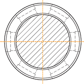
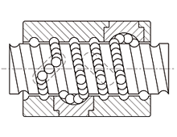
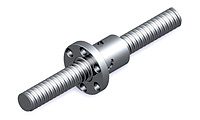
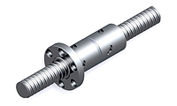
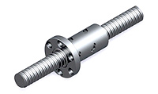
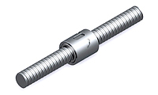
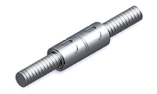

客服專線：(03)280-6015
內循環構造的優點
使螺帽外徑為精巧的「圓周型」。
因此適合內部空間較小的機器。
需要注意的是內循環滾珠螺桿的螺桿軸，必須有一端是完全牙，且該端的肩部直徑必須小於螺桿軸外徑，否則無法組裝螺帽。

內循環圓周型側視圖

內循環螺帽圖
技術文件
- PDF 規格型錄
- CAD 圖檔請致電公司洽詢
精密級內循環系列
|  |  |  |
| FSIC(單螺帽) | FDIC(雙螺帽) | FOIC(雙螺帽) |
|  |  | |
| RSIC無法蘭(單螺帽) | RDIC無法蘭(單螺帽) |